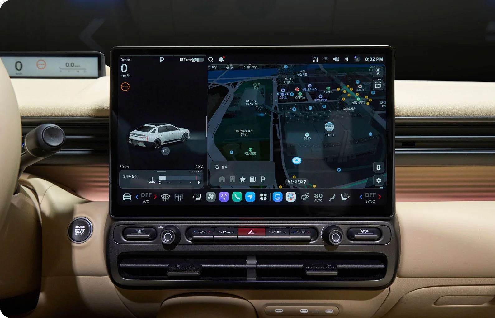

▲ 좌우 끝단을 잇는 H-엣지 라이팅 주간주행등이 새로운 아반떼의 정면 인상을 완전히 바꿔놓았다 ⓒ 현대자동차
지난 6월 26일 2026 부산모빌리티쇼에서 현대차가 8세대 완전변경 모델 '디 올 뉴 아반떼'를 세계 최초로 공개했습니다. 2020년 4월 7세대(CN7)가 나온 지 약 6년 만의 완전변경으로, 그동안 국내 준중형 세단 시장에서 사실상 독주 체제를 굳혀온 아반떼가 이번엔 어떻게 달라졌는지 관심이 쏠리고 있습니다. 정식 출시와 세부 가격은 2026년 3분기 중 공개될 예정이며, 현대차 공식 홈페이지에서는 7월 31일까지 사전 등록 이벤트 '얼리 패스'를 진행하고 있습니다.
1. 종이접기 대신 곡선 — 차체부터 커졌다

▲ 후면부는 H 형상의 테일램프와 공력 성능을 고려한 디퓨저 디자인을 적용했다 ⓒ 현대자동차
외관에서 가장 먼저 눈에 띄는 변화는 7세대의 각지고 파격적이었던 '종이접기' 스타일링을 걷어내고, 좀 더 매끄럽고 볼륨감 있는 세단 비례로 돌아섰다는 점입니다. 전면부는 좌우 끝단을 하나로 연결하는 H-엣지 라이팅 주간주행등을 적용해 차를 더 넓고 낮아 보이게 만들었고, 후면부 역시 H 형상의 테일램프와 공력 성능을 고려한 디퓨저 디자인을 갖췄습니다.
| 항목 | 8세대 제원 | 7세대 대비 |
|---|---|---|
| 전장 | 4,765mm | +55mm |
| 전폭 | 1,855mm | +30mm |
| 전고 | 1,425mm | +5mm |
| 휠베이스 | 2,750mm | +30mm |
전장과 휠베이스가 함께 늘어나면서 현대차 측은 "중형차 수준의 실내 공간"을 확보했다고 강조하고 있습니다. 준중형 세단이라는 체급 안에서 뒷좌석 공간 부족을 지적받아온 만큼, 실제 체감 공간이 얼마나 넓어졌는지가 출시 후 가장 먼저 확인해볼 포인트입니다.
2. 파워트레인 — 2.0 가솔린과 하이브리드 투트랙
공개된 파워트레인은 2.0 가솔린과 하이브리드 두 가지입니다. 2.0 가솔린 엔진은 배기량 1,999cc, 최고출력 149마력, 최대토크 18.3kgf·m으로, 기존 1.6 가솔린 대비 출력이 26마력 늘었습니다. 변속기는 무단변속기 계열인 IVT가 맞물립니다. 하이브리드는 시스템 합산 최고출력 157마력으로, 스마트 회생제동 3.0과 하이브리드 계층형 예측 제어 시스템이 새로 적용됩니다. 정차 중에도 엔진 없이 공조장치와 인포테인먼트를 사용할 수 있는 '스테이 모드'도 눈에 띄는 기능입니다.
3. 준중형 최초 생성형 AI 비서 '글레오' 탑재

▲ 계기판과 내비게이션 화면이 하나로 이어진 대형 디스플레이에 새 인포테인먼트 '플레오스 커넥트'가 탑재됐다 ⓒ 현대자동차그룹
안드로이드 오토모티브 기반의 새 인포테인먼트 '플레오스 커넥트'가 처음 탑재됩니다. 계기판과 내비게이션을 하나로 통합한 대형 디스플레이를 통해 지도, 차량 정보, 공조 제어를 한 화면에서 조작할 수 있게 됐습니다.
4. 예상 가격과 출시 일정
정확한 트림별 가격은 아직 공개되지 않았지만, 업계에서는 기존 7세대 가솔린 기본 트림(1,938만원)에 하이브리드 프리미엄이 더해지는 방식으로 책정될 경우 하이브리드 진입 가격이 2,100만원대 안팎에서 형성될 것이라는 추정이 나옵니다. 정확한 가격과 트림 구성, 연비는 2026년 3분기 공식 발표를 통해 확인해야 합니다.